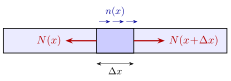
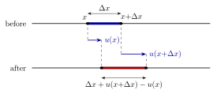
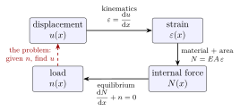
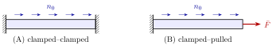
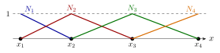
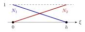
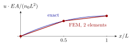

Lecture 2
Elasticity as a Boundary Value Problem
2.1 Why a second perspective?
Lecture 1 needed hardly any calculus, and you may reasonably ask why we do not simply continue adding springs. Three reasons:
Distributed reality. Loads like self-weight act everywhere, cross-sections vary continuously, temperature fields exist at every point. A finite list of nodes does not describe this; a function \(u(x)\) does. We need equipment for functions.
No intuition in 2D/3D. For a chain of springs you can see the element matrix. For a triangular patch of elastic material you cannot. We need a procedure that generates element matrices for us when drawing-based intuition runs out. (It will, in Lecture 4.)
Trust. If FEM is just clever bookkeeping, why should its answers approach the true ones as the mesh gets finer? Only a formulation with a differential equation lets us state such a question, and answer it.
The plan of this lecture is a single long arc:
\(\text{physics}\;\to\;\text{differential equation}\;\to\;\text{boundary value problem}\;\to\;\text{ansatz}\;\to\;{}\)
\(\to\;\text{shape functions}\;\to\;\fbox{$\frac{EA}{h}\left[\begin{smallmatrix}1&-1\\-1&1\end{smallmatrix}\right]$}\)
The arc ends where Lecture 1 started. That is the point.
2.2 From physics to a differential equation
Our object: a straight elastic bar along the \(x\)-axis, from \(x=0\) to \(x=L\), cross-section \(A(x)\), Young’s modulus \(E(x)\), carrying a distributed axial load \(n(x)\)1 (units N/m — think of the self-weight of a hanging bar, \(n=\rho g A\)). Unknown: the axial displacement field \(u(x)\).
We build the governing equation from three ingredients, each one line of physics. Keep an eye on how cleanly they separate: one is balance, one is geometry, one is material. None of them knows about the other two — and, as we will stress again below, the order in which we meet them is a free choice. We start from the balance of forces, the statement closest to the statics you already know.
(i) Equilibrium — balance of forces.
Cut a slice of finite length \(\Delta x\) out of the bar (Fig. 2.1) and list every force acting on it — all of them horizontal, because a bar carries axial loads only (a transverse distributed load is a beam problem, a different structural member with a different theory). The slice feels the internal force \(N(x)\) pulling left at its left face, \(N(x+\Delta x)\) pulling right at its right face, and its share of the distributed load, very nearly \(n(x)\,\Delta x\) (force per length \(\times\) length). Balance: \[N(x+\Delta x) - N(x) + n(x)\,\Delta x = 0 .\] Divide by \(\Delta x\) and let the slice shrink: \[\lim_{\Delta x\to 0}\frac{N(x+\Delta x) - N(x)}{\Delta x} + n(x) = 0 \qquad\Longrightarrow\qquad \frac{\mathrm{d}N}{\mathrm{d}x} + n(x) = 0 . \tag{2.1}\]

Remark
Why \(\Delta x\) first and \(\mathrm{d}x\) only afterwards? A drawing can only ever show a finite piece. Sketches labelled “\(\mathrm{d}x\)” are shorthand for exactly the two moves we just made: draw a slice of finite length \(\Delta x\), write the physics for it, then let \(\Delta x \to 0\) in the equations. Done this way, the limit is honest calculus — a difference quotient becoming a derivative — rather than arithmetic with “infinitely small” pictures. Once you have walked the long way a few times, you may read every \(\mathrm{d}x\)-drawing in the literature (and later in these notes) as this shorthand.
(ii) Kinematics — geometry of deformation.
Now forget forces entirely and only watch shapes change. Take the same slice before and after deformation (Fig. 2.2): the cross-section at \(x\) moves right by \(u(x)\), the one at \(x+\Delta x\) by \(u(x+\Delta x)\). The slice, originally \(\Delta x\) long, ends up with length \(\Delta x + u(x+\Delta x) - u(x)\). Its relative elongation — elongation per unit of original length, the local cousin of Lecture 1’s elongation \(\Delta\) — is therefore \[\frac{\bigl[\Delta x + u(x{+}\Delta x) - u(x)\bigr] - \Delta x}{\Delta x} = \frac{u(x{+}\Delta x) - u(x)}{\Delta x} \;\xrightarrow{\;\Delta x \to 0\;}\; \varepsilon(x) = \frac{\mathrm{d}u}{\mathrm{d}x}, \tag{2.2}\] the strain — the same limit move as before. Sanity check: if \(u\) is constant, the whole bar shifts rigidly and \(\varepsilon= 0\) — the rigid body mode of Lecture 1, now wearing calculus. No material property appeared anywhere; this is pure geometry.

(iii) Material law.
Experiment (Hooke): stress is proportional to strain, \[\sigma(x) = E\,\varepsilon(x). \tag{2.3}\] This is the only place the material enters, and the only equation of the three that is approximate — a model of real material behavior, valid for small strains. Multiplying by the area gives the internal normal force carried by the cross-section: \[N(x) = A\,\sigma(x) = EA\,\varepsilon(x). \tag{2.4}\]
Combine.
Insert the kinematic relation (2.2) into the material law (2.4), so \(N = EA\,u'\), and that into the balance (2.1): \[\boxed{\;\frac{\mathrm{d}}{\mathrm{d}x}\!\left( EA \,\frac{\mathrm{d}u}{\mathrm{d}x}\right) + n(x) = 0, \qquad 0<x<L. \;} \tag{2.5}\] For constant \(EA\) this is simply \(EA\,u'' = -n(x)\): a second-order ordinary differential equation for the unknown function \(u(x)\).
The structure of what we just did deserves its own picture (Fig. 2.3): the primal variable \(u\) is differentiated into \(\varepsilon\) (kinematics), converted by the material into \(N\) (constitution), and differentiated again into a balance with the load \(n\) (equilibrium). The differential equation is nothing but the composition of the three arrows. And say it explicitly, because the numbering (i)–(iii) may suggest otherwise: the order was presentation, not logic. The three statements are independent — none follows from another — and we could have told them in any sequence; we chose balance-first because it is the most familiar, while the arrows of the diagram run \(u \to n\), and the problem we solve (dashed) runs backwards again. Hold on to this diagram; it is worth more than it seems.

Remark
This three-step pattern — a kinematic relation, a material law, a balance law — is not special to elasticity. Steady heat conduction: temperature \(T \to\) temperature gradient \(\to\) heat flux (Fourier’s law) \(\to\) heat balance. Electrostatics, groundwater flow, diffusion: same skeleton, different names. We exploit this deliberately in the exercise that follows this lecture, and we will give the pattern its proper name in Lecture 4. For now, one message: learn the steps, not the symbols.
2.3 The boundary value problem
A differential equation alone does not determine \(u\) — integrating (2.5) twice produces two free constants. The missing information sits at the two ends of the bar, exactly where Lecture 1 put its supports and loads. The complete problem statement is called a boundary value problem (BVP):
Key idea
Boundary value problem (strong form). Domain: the open interval \(\Omega=(0,L)\) — the body itself. Boundary: \(\Gamma = \{0, L\}\) — here just two points. Find the function \(u(x)\) such that \[\left(EA\,u'\right)' + n = 0 \ \text{ in } \Omega,\] and such that at each boundary point exactly one of the following holds: \[\text{(a) } u = \bar u \ \text{(prescribed displacement)} \quad\text{or}\quad \text{(b) } N = EA\,u' = \bar F \ \text{(prescribed end force).}\] In (b), \(\bar F\) is the applied force, positive in \(+x\): \(N(L) = \bar F\) at the right end, but \(-N(0) = \bar F\) at the left end (as \(f_1 = -N\) in Lecture 1).
This is the function version of the rule from Section 1.5: at every boundary point, one member of the conjugate pair \((u, N)\) is given, the other comes out of the solution. And as before, at least one point must prescribe \(u\) itself, or the bar floats (\(u\) determined only up to a constant — the rigid body mode again, now appearing as the constant of integration).
Remark
Names you will meet. Conditions on the primal variable \(u\) are called Dirichlet or essential boundary conditions; conditions on the derivative quantity (force, flux) are Neumann or natural. Either kind is homogeneous if the prescribed value is zero (\(u=0\): fixed support; \(N=0\): free end) and non-homogeneous otherwise (\(u=\delta\): dragged support; \(N=\bar F\): applied end load). Why “essential” versus “natural” is apt will become clear — rather beautifully — in Section 2.9. Until then, treat the names as vocabulary.
2.4 Reference solutions — and where the conditions come from
To judge approximations we need cases we can solve exactly. We solve two, with different boundary conditions, which shows at the same time where the conditions come from physically and that the solution procedure is indifferent to which legal pair we pick. Both cases share a constant \(EA\) and a constant distributed load \(n(x)=n_0\) (Fig. 2.4).

Case A: clamped at both ends.
The bar is welded to rigid walls. A wall is a device that prevents displacement, so each wall dictates an essential condition, here both homogeneous: \(u(0)=0\) and \(u(L)=0\). In exchange we surrender all knowledge of the end forces — the walls will supply whatever reactions it takes (Section 1.5, now in function clothes). The BVP: \[EA\,u'' = -n_0, \qquad u(0)=0,\quad u(L)=0 . \tag{2.6}\] Integrating twice gives \(u = -\tfrac{n_0}{2EA}x^2 + C_1 x + C_2\) — every choice of the constants solves the differential equation; it is the two boundary conditions that single out one solution. Here \(u(0)=0\) forces \(C_2 = 0\) and \(u(L)=0\) forces \(C_1 = n_0 L/(2EA)\): \[u_{\mathrm{ex}}(x) = \frac{n_0}{2EA}\,x\,(L-x), \tag{2.7}\] a parabola, symmetric, zero at both ends — a chain of springs between two walls, each node pushed to the right by the same force, would show the same pattern. Keep (2.7) within reach; the coming sections shoot at it repeatedly.
Case B: clamped left, pulled right.
Remove the right wall and instead pull with a known force: \(u(0)=0\) (essential) and \(N(L) = EA\,u'(L) = \bar F\) (natural, non-homogeneous). For this pair it pays to integrate the balance first: \(N' = -n_0\) gives \(N(x) = -n_0 x + C_1\), and \(N(L) = \bar F\) fixes \(C_1\), so \[N(x) = \bar F + n_0\,(L-x)\] — read it physically: the cross-section at \(x\) carries the end force plus all the distributed load hanging beyond it. (Statics alone could have told us this; with these boundary conditions the internal force is known before any displacement is.) One more integration, \(EA\,u' = N\) with \(u(0)=0\): \[u_{\mathrm{ex}}(x) = \frac{1}{EA}\Bigl[\bar F\,x + n_0\Bigl(Lx - \frac{x^2}{2}\Bigr)\Bigr].\] With \(\bar F = 0\) (a free end, the homogeneous natural condition) this is exactly the solution our finite elements will be tested against in Section 2.12.
Two different boundary-condition pairs, one procedure: the differential equation supplies a two-parameter family of candidates, and exactly two conditions — one per boundary point, each a legal member of its conjugate pair \((u, N)\) — pin the two constants down. Case A is our target for the ansatz methods; Case B (with \(\bar F = 0\)) returns in Section 2.12.
2.5 The ansatz: turning a function into a few numbers
Here is the single most important conceptual move of the course. We cannot search through “all functions” for the solution — there are too many. Instead we choose a family of candidate functions described by a few parameters, and search only within the family. Such a chosen form is called an ansatz (German for “approach/setup”; plural Ansätze): \[\tilde u(x) \;=\; \sum_{j=1}^{m} a_j\,\varphi_j(x), \tag{2.8}\] where the \(\varphi_j\) are functions we pick (known), and the \(a_j\) are numbers to be determined (unknown). With the ansatz, the impossible task “find a function” becomes the familiar task “find \(m\) numbers” — and Lecture 1 taught us everything about finding a few numbers from a few linear equations.
Two requirements guide the choice of the \(\varphi_j\) for now: the ansatz should satisfy the essential boundary conditions for any values of the \(a_j\), and it should be smooth enough to differentiate. For the reference problem (2.6), a convenient one-parameter ansatz is \[\tilde u(x) = a_1\,\varphi_1(x), \qquad \varphi_1(x) = x(L-x),\] which vanishes at \(x=0\) and \(x=L\) no matter what \(a_1\) is.
How do we judge a candidate? Insert it into the differential equation. Whatever is left over is the residual: \[R(x) \;=\; EA\,\tilde u''(x) + n(x). \tag{2.9}\] For the true solution the residual vanishes identically — the equation holds at every point. For our finitely-parameterized \(\tilde u\) it generally cannot vanish everywhere; \(R(x)\) measures how wrong the candidate is at each point \(x\). All methods that follow are different answers to one question:
Key idea
We cannot make \(R(x)=0\) everywhere. In what sense, then, should we make the residual small? Every classical discretization method — collocation, least squares, Galerkin — is one specific answer. The unknowns \(a_j\) are then found from \(m\) conditions, one per parameter.
2.6 Answer 1: collocation — insist at a few points
The bluntest answer: force \(R=0\) at \(m\) chosen points (“collocation points”), and look away everywhere else.
Example 1 (constant load).
Reference problem (2.6), ansatz \(\tilde u = a_1 x(L-x)\), so \(\tilde u'' = -2a_1\) and \[R(x) = -2a_1 EA + n_0 .\] The residual happens to be constant, so collocation at any point gives \[a_1 = \frac{n_0}{2EA} \quad\Longrightarrow\quad \tilde u(x) = \frac{n_0}{2EA}\,x(L-x) = u_{\mathrm{ex}}(x).\] We recovered the exact solution. No miracle: the exact solution (2.7) is itself of the form \(a\,x(L-x)\) — it lives inside our ansatz family, and any sensible method will find it. Remember this principle; it returns in Section 2.11 with practical force.
Example 2 (linear load).
Now sharpen the test: triangular load \(n(x) = n_0\,x/L\), same BVP otherwise. The exact solution (integrate twice, fit the ends) is the cubic \[u_{\mathrm{ex}}(x) = \frac{n_0}{6EA}\,\frac{x\,(L^2 - x^2)}{L}, \tag{2.10}\] which does not live in the one-parameter family \(a_1 x(L-x)\). The residual \[R(x) = -2a_1 EA + n_0 \frac{x}{L}\] now genuinely depends on \(x\). Collocating at \(x=L/2\) gives \(a_1 = n_0/(4EA)\); collocating at \(x=L/4\) gives \(a_1 = n_0/(8EA)\) — half the displacement, as if the bar were twice as stiff, from the same ansatz! The result depends on an arbitrary choice that has nothing to do with the physics. Collocation is simple and sometimes useful, but this arbitrariness is a real flaw. Surely the equation at all points should have a say.
2.7 Answer 2: least squares — minimize the total misfit
A natural repair: make the residual small on average, by minimizing its integrated square, \[\min_{a_1,\dots,a_m} \int_0^L R(x)^2 \,\mathrm{d}x .\] For Example 2 the derivative with respect to \(a_1\) must vanish. Since \(\partial R/\partial a_1 = -2EA\), this is \(\frac{\mathrm{d}}{\mathrm{d}a_1}\int_0^L R^2\,\mathrm{d}x = \int_0^L 2R\,\frac{\partial R}{\partial a_1}\,\mathrm{d}x = -4EA\int_0^L R\,\mathrm{d}x = 0\), so \[\int_0^L \Bigl(-2a_1EA + n_0\tfrac{x}{L}\Bigr)\,\mathrm{d}x = 0 \quad\Longrightarrow\quad a_1 = \frac{n_0}{4EA}.\] No arbitrary points anymore — every \(x\) was consulted. Least squares is a respectable method (and reappears in modern research), but for our problems a third answer turns out to carry more structure. To see it, first put all answers under one roof.
2.8 Answer 3: weighted residuals and Galerkin’s choice
All methods so far share one shape. Multiply the residual by a chosen weight function \(w(x)\) and demand that the product integrate to zero: \[\int_0^L w_i(x)\,R(x)\,\mathrm{d}x = 0, \qquad i=1,\dots,m . \tag{2.11}\] One weight per unknown parameter: \(m\) equations for \(m\) unknowns. The residual is made to vanish “as seen through the eyes of” each weight function:
Collocation: \(w_i\) = needle-like spikes at the collocation points (Dirac deltas) — only those points are consulted.
Least squares: \(w_i = \partial R/\partial a_i\) — the weights follow from the minimization.
Galerkin: \(w_i = \varphi_i\) — the weights are the ansatz functions themselves.
Galerkin’s choice looks innocent, almost lazy. It is in fact the deepest of the three: it will turn out to be equivalent to minimizing the potential energy \(\Pi\) from Section 1.6, it produces symmetric stiffness matrices, and it comes with the strongest approximation guarantees. We adopt it from here on.
Example 2, Galerkin, one parameter.
With \(w_1=\varphi_1=x(L-x)\): \[\int_0^L x(L-x)\Bigl(-2a_1EA + n_0\tfrac{x}{L}\Bigr)\mathrm{d}x = 0 \;\Longrightarrow\; -2a_1EA\,\frac{L^3}{6} + n_0\,\frac{L^3}{12} = 0 \;\Longrightarrow\; a_1 = \frac{n_0}{4EA}.\]
Example 2, Galerkin, two parameters.
Add a second function: \(\varphi_2 = x^2(L-x)\) (also zero at both ends), so \(\tilde u = a_1\varphi_1 + a_2\varphi_2\). Writing (2.11) for \(i=1,2\) and sorting terms produces — look at the shape of it — a linear system \[\begin{bmatrix} K_{11} & K_{12}\\ K_{21} & K_{22}\end{bmatrix} \begin{bmatrix} a_1\\ a_2 \end{bmatrix} = \begin{bmatrix} f_1\\ f_2 \end{bmatrix}, \qquad K_{ij} = \int_0^L EA\,\varphi_i'\,\varphi_j'\,\mathrm{d}x, \qquad f_i = \int_0^L \varphi_i\, n\,\mathrm{d}x, \tag{2.12}\] (the \(K_{ij}\) are stated here in the symmetric form justified in the next section: from (2.11) you get \(\int_0^L \varphi_i\,(-EA\,\varphi_j'')\,\mathrm{d}x\); one integration by parts turns it into the form above, because \(\varphi_i(0)=\varphi_i(L)=0\) — both give the same numbers). Carrying out the four integrals: \[\begin{bmatrix} \dfrac{EAL^3}{3} & \dfrac{EAL^4}{6}\\[2.5mm] \dfrac{EAL^4}{6} & \dfrac{2EAL^5}{15}\end{bmatrix} \begin{bmatrix} a_1\\ a_2 \end{bmatrix} = \begin{bmatrix} \dfrac{n_0L^3}{12}\\[2.5mm] \dfrac{n_0L^4}{20} \end{bmatrix} \quad\Longrightarrow\quad a_1 = \frac{n_0}{6EA},\qquad a_2 = \frac{n_0}{6EAL},\] and assembling \(\tilde u = a_1\varphi_1 + a_2\varphi_2\) gives exactly the cubic (2.10). With two parameters the exact solution entered the family, and Galerkin found it — just as promised by the principle of Section 2.6.
Pause on the notation in (2.12). A matrix \(\mathbf{K}\), a vector of unknowns, a load vector \(\mathbf{f}\): \(\mathbf{K}\mathbf{a} = \mathbf{f}\). The same algebraic animal as Lecture 1 — except the unknowns \(a_j\) are, so far, abstract coefficients with no physical face. Giving them a face is the job of Section 2.10. One more mathematical stop first.
2.9 The weak form: shifting a derivative
A technical irritation: the residual (2.9) contains \(\tilde u''\), so every ansatz function must be twice differentiable — this will collide head-on with the piecewise-linear functions we are about to love. The cure is one application of a rule you already know, and it carries a surprising amount of structure out with it.
Recall the product rule, \((w\,g)' = w'g + w\,g'\), integrated over the bar: \[\bigl[\,w\,g\,\bigr]_0^L = \int_0^L w'\,g\,\mathrm{d}x + \int_0^L w\,g'\,\mathrm{d}x \quad\Longleftrightarrow\quad \int_0^L w\,g'\,\mathrm{d}x = \bigl[\,w\,g\,\bigr]_0^L - \int_0^L w'\,g\,\mathrm{d}x .\] This is integration by parts: it moves one derivative from \(g\) onto \(w\), at the price of a boundary term. Apply it to the weighted residual statement with \(g = EA\,u' = N\): \[\int_0^L w\,\bigl[(EA\,u')' + n\bigr]\mathrm{d}x = 0 \quad\Longrightarrow\quad \underbrace{\int_0^L w'\,EA\,u'\,\mathrm{d}x}_{\text{both sides: one derivative}} = \int_0^L w\,n\,\mathrm{d}x + \bigl[\,w\,N\,\bigr]_0^L .\] Now deal with the boundary term, and watch the boundary conditions sort themselves into the two kinds of Section 2.3:
At an end where \(u\) is prescribed (essential BC), the solution has no freedom, so we require the weights to vanish there: \(w=0\). The boundary term dies.
At an end where the force is prescribed (natural BC), say \(N(L) = \bar F\), we simply substitute: the term becomes \(w(L)\,\bar F\) — a known load-like contribution.
Key idea
Weak form. Find \(u\) with \(u=\bar u\) on the essential boundary, such that \[\int_0^L w'\,EA\,u'\,\mathrm{d}x \;=\; \int_0^L w\,n\,\mathrm{d}x \;+\; w(L)\,\bar F \qquad\text{for all admissible weights } w .\] “Admissible”: \(w=0\) wherever \(u\) is prescribed. The force boundary condition is nowhere imposed — it entered the equation by itself. That is why it is called natural; the condition on \(u\), which we must still enforce by hand, is essential. (The names from Section 2.3, now earned.)
Three gifts, delivered by one integration by parts:
Less smoothness needed. Only first derivatives of \(u\) and \(w\) appear. Functions with kinks — piecewise linear ones! — are now legal. “Weak” refers to these weakened demands.
Natural boundary conditions handle themselves. Applied end forces simply append to the right-hand side; only the essential conditions need enforcement. (Remember how in Lecture 1 prescribed forces went into \(\mathbf{f}\) while prescribed displacements needed the partitioning surgery — the same asymmetry, seen from the other side.)
Symmetry. The left side treats \(w\) and \(u\) identically. With Galerkin (\(w\) and \(u\) built from the same \(\varphi_i\)) this yields \(K_{ij}=K_{ji}\) — the symmetric matrices promised in (2.12). Deeper still: the weak form is exactly the condition \(\frac{\mathrm{d}}{\mathrm{d}\alpha}\Pi(u+\alpha w)\big|_{\alpha=0}=0\) — “the derivative of the potential energy vanishes in every direction \(w\)”, with the bar’s potential energy \(\Pi[u] = \int_0^L \tfrac12 EA\,u'^2\,\mathrm{d}x - \int_0^L n\,u\,\mathrm{d}x - \bar F\,u(L)\). Galerkin’s method is the minimum-energy principle of Section 1.6, grown up to handle functions. One can also read \(w\) as a small imagined (“virtual”) displacement, which is why engineers call the weak form the principle of virtual work.
2.10 Discretization: shape functions
Everything so far used hand-picked global ansatz functions like \(x(L-x)\) — fine for a textbook interval, hopeless in practice. Suppose the domain is a bracket with holes, or even just a bar with ten different segments: inventing smooth functions that satisfy the essential boundary conditions and approximate well everywhere is an art, not a method. Worse, the coefficients \(a_j\) mean nothing physical, and each \(\varphi_j\) is nonzero over the whole domain, so \(\mathbf{K}\) is full.
The fix is one of the great simple ideas of twentieth-century computation. Chop the domain into pieces, and build the ansatz from the simplest possible local functions. Place \(m\) nodes \(x_1<x_2<\dots<x_m\) on the bar (any spacing); call the pieces between consecutive nodes elements. To node \(i\) attach the hat function \(N_i(x)\): piecewise linear, equal to \(1\) at node \(i\), equal to \(0\) at every other node (Fig. 2.5). (Careful: \(N_i\), with a subscript, is a shape function, not the normal force \(N\).) The ansatz is \[\tilde u(x) = \sum_{i=1}^{m} u_i\,N_i(x). \tag{2.13}\]

The functions \(N_i\) are called shape functions, and three of their properties quietly solve three different problems at once:
Kronecker property: the parameters get a physical face. Since \(N_i(x_j) = 1\) if \(i=j\) and \(0\) otherwise, evaluating (2.13) at node \(j\) gives \(\tilde u(x_j) = u_j\). The coefficient \(u_j\) is the displacement of node \(j\) — not an abstract number. The nodal displacements of Lecture 1 are back, now as parameters of a genuine function defined everywhere, with linear interpolation between nodes.
Essential boundary conditions without thinking. To impose \(u(0) = \bar u\): set \(u_1 = \bar u\). Done. Fixing a boundary value of the function reduces to fixing one coefficient — exactly the “prescribed DOF” of Section 1.5, handled by the same partitioning (1.5). Compare the ingenuity we needed to cook up \(x(L-x)\), which satisfied the BCs by construction; here, any boundary values on any mesh are imposed mechanically. This modularity — functions that make no commitment to particular boundary conditions, plus a trivial rule for imposing them later — is what makes the method programmable.
Locality. \(N_i\) overlaps only its neighbors, so \(K_{ij} = \int N_i'\,EA\,N_j'\,\mathrm{d}x = 0\) unless \(i\) and \(j\) share an element: the sparse, banded matrices of Lecture 1, resurrected from pure calculus.
(And since the hats sum to one at every point, \(\sum_i N_i(x) = 1\), the ansatz can represent a rigid translation \(u=\text{const}\) exactly — the rigid body mode is still faithfully in the family, as it must be.)
Are kinked functions allowed? In the strong form, no — \(\tilde u''\) blows up at the kinks. In the weak form, yes: only first derivatives appear, and those are perfectly decent piecewise constants. This is why Section 2.9 had to come before this one. The weak form is not mathematical pedantry; it is the licence for hat functions.
2.11 The finite element, at last
Now run Galerkin on the weak form with the hat ansatz. The global statement, for each weight \(w = N_i\): \[\sum_j \left[\int_0^L N_i'\,EA\,N_j'\,\mathrm{d}x\right] u_j = \int_0^L N_i\,n\,\mathrm{d}x + \text{boundary force terms}.\] The key computational observation: every integral over \((0,L)\) is a sum of integrals over the elements, and on a single element only the two local hats are nonzero. So we may compute everything element by element and add — which is precisely the assembly of Lecture 1, now reappearing as the additivity of integration.
Take one element of length \(h\), local coordinate \(\xi\in[0,h]\), local nodes 1 and 2. The two shape-function pieces on it (Fig. 2.6) and their derivatives are \[N_1 = 1-\frac{\xi}{h},\quad N_2 = \frac{\xi}{h}; \qquad N_1' = -\frac1h,\quad N_2' = \frac1h .\] It pays to bundle the derivatives in a row vector, because exactly this object generalizes to 2D and 3D: \[\mathbf{B} = \begin{bmatrix} N_1' & N_2' \end{bmatrix} = \frac1h\begin{bmatrix} -1 & 1 \end{bmatrix}, \qquad \varepsilon(\xi) = \mathbf{B}\,\mathbf{u}^e, \quad \mathbf{u}^e = \begin{bmatrix}u_1\\u_2\end{bmatrix}, \quad \mathbf{N} = \begin{bmatrix} N_1 & N_2 \end{bmatrix}.\] (\(\mathbf{B}\) turns nodal displacements into strain; check: \(\varepsilon= (u_2-u_1)/h\), elongation over length, as geometry demands.) The element’s contribution to the stiffness matrix is \[\mathbf{k}^e = \int_0^h \mathbf{B}^{\mathsf{T}}\, EA\,\mathbf{B}\,\mathrm{d}\xi = \frac{EA}{h^2} \begin{bmatrix} 1 & -1\\ -1 & 1\end{bmatrix} \int_0^h \mathrm{d}\xi = \boxed{\;\frac{EA}{h}\begin{bmatrix} 1 & -1\\ -1 & 1 \end{bmatrix}\;} \tag{2.14}\] and, for a constant distributed load \(n_0\), its load contribution is \[\mathbf{f}^e = \int_0^h \begin{bmatrix}N_1\\N_2\end{bmatrix} n_0 \,\mathrm{d}\xi = \frac{n_0 h}{2}\begin{bmatrix}1\\1\end{bmatrix}. \tag{2.15}\]

Key idea
Equation (2.14) is the spring matrix of Lecture 1 with \(k = EA/h\) — derived, this time, from the differential equation through Galerkin’s method, with no springs in sight. The engineering intuition and the mathematics are the same theory. And (2.15) settles by calculation what intuition could only guess: a uniformly distributed load is carried to the two nodes in equal halves.
The general pattern, worth memorizing in this exact form because it will survive every generalization to come: \[\boxed{\;\begin{aligned} \mathbf{k}^e &= \int_{\text{element}} \mathbf{B}^{\mathsf{T}}\, (\text{material stiffness})\,\mathbf{B}\;\mathrm{d}(\text{volume}),\\ \mathbf{f}^e &= \int_{\text{element}} \mathbf{N}^{\mathsf{T}}\,(\text{load})\;\mathrm{d}(\text{volume}). \end{aligned}\;} \tag{2.16}\] (In 1D: material stiffness \(E\) and \(\mathrm{d}(\text{volume}) = A\,\mathrm{d}\xi\), which gives the \(EA\) of (2.14).)
2.12 Worked example: two elements against the exact solution
Problem: bar of length \(L\), constant \(EA\), constant load \(n_0\) (think self-weight), fixed at the left, free at the right: \[(EA u')' + n_0 = 0,\qquad u(0)=0,\qquad N(L)=0 .\] Exact solution: \(u_{\mathrm{ex}}(x) = \dfrac{n_0}{EA}\left(Lx - \dfrac{x^2}{2}\right)\).
Mesh: two equal elements, \(h = L/2\), nodes \(1,2,3\). Both elements have \(\mathbf{k}^e = \frac{EA}{h}\left[\begin{smallmatrix}1&-1\\-1&1\end{smallmatrix}\right]\) and \(\mathbf{f}^e = \frac{n_0 h}{2}\left[\begin{smallmatrix}1\\1\end{smallmatrix}\right]\). Assembly (Lecture 1, verbatim — node 2 receives \(\tfrac{n_0h}{2}\) from each side): \[\frac{EA}{h}\begin{bmatrix} 1 & -1 & 0\\ -1 & 2 & -1\\ 0 & -1 & 1\end{bmatrix} \begin{bmatrix} u_1\\u_2\\u_3\end{bmatrix} = n_0 h\begin{bmatrix} 1/2\\ 1\\ 1/2 \end{bmatrix} .\] Essential BC: \(u_1 = 0\); the free end needs no action (natural!). Strike row and column 1: \[\frac{EA}{h}\begin{bmatrix} 2 & -1\\ -1 & 1 \end{bmatrix} \begin{bmatrix} u_2\\u_3 \end{bmatrix} = n_0 h \begin{bmatrix} 1\\ 1/2\end{bmatrix} \quad\Longrightarrow\quad u_2 = \frac{3 n_0 h^2}{2EA} = \frac{3 n_0 L^2}{8EA}, \qquad u_3 = \frac{n_0 L^2}{2EA}.\] Compare: \(u_{\mathrm{ex}}(L/2) = \frac{3n_0L^2}{8EA}\), \(\ u_{\mathrm{ex}}(L) = \frac{n_0L^2}{2EA}\). The finite element solution is exact at the nodes (Fig. 2.7) — between them, the straight segments cut across the parabola. Nodal exactness is a lucky specialty of this 1D problem class, not a general FEM property; but “exact where it matters most, interpolated in between” is a fair caricature of how well Galerkin behaves in general.

2.13 The dictionary
One lecture with springs, one with a boundary value problem, one theory:
| Lecture 1 (springs) | Lecture 2 (functions) |
|---|---|
| spring between two nodes | element: interval with linear shape functions |
| stiffness \(k\) | \(EA/h\) from \(\int \mathbf{B}^{\mathsf{T}}EA\,\mathbf{B}\,\mathrm{d}\xi\) |
| elongation \(\Delta = u_2-u_1\) | strain \(\varepsilon= \mathbf{B}\mathbf{u}^e\) |
| nodal forces | weighted-residual right-hand side \(\int \mathbf{N}^{\mathsf{T}}n\), \(\bar F\) |
| assembly (add into global slots) | additivity of the integral over elements |
| fix \(u_i\), solve the rest | essential BC on coefficients + partitioning |
| free node means \(f_i=0\) | natural BC, included by the weak form itself |
| \(\Pi = \tfrac12\mathbf{u}^{\mathsf{T}}\mathbf{K}\mathbf{u} - \mathbf{u}^{\mathsf{T}}\mathbf{f}\) minimal | weak form (Galerkin \(=\) minimum energy) |
Looking ahead
Everything above happened on a line. The honest reason for all this machinery is that it transplants: in Lecture 4 the domain will be a two-dimensional region, the mesh a set of triangles, the shape functions little tents over the mesh — and not one concept will need to be added: ansatz, residual, weak form, \(\mathbf{B}\), \(\int\mathbf{B}^{\mathsf{T}}\mathbf{D}\,\mathbf{B}\), assembly, essential/natural conditions. Before that, Lecture 3 banks a quicker profit: taking the spring picture into the plane, to real trusses. And the exercise below lets you replay the whole arc of this lecture on a different physics — steady heat flow — to convince yourself the steps truly do not care about the symbols. The lectures on physics-based machine learning (Part IV) can also start right after the exercise: Lectures A and B need nothing beyond this lecture, and connect what we just built to regression, neural networks, and the physics-informed methods of current research. Lectures 3 to 6 do not depend on them.
Notation varies between books: \(n(x)\), \(p(x)\) and \(q(x)\) are all in use for the distributed axial load, with \(q\) most often reserved for transverse loads on beams. We write \(n\) because it pairs with the internal normal force \(N\) it feeds: lowercase force per length, uppercase resultant force. In 2D and 3D the same actor returns as the body force \(\mathbf{b}\).↩︎